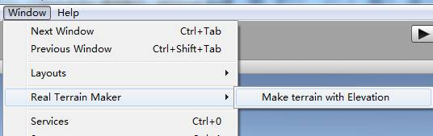
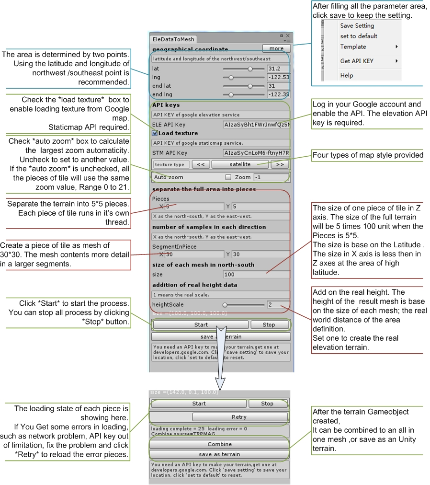
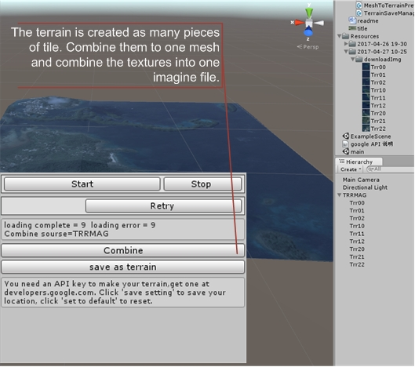
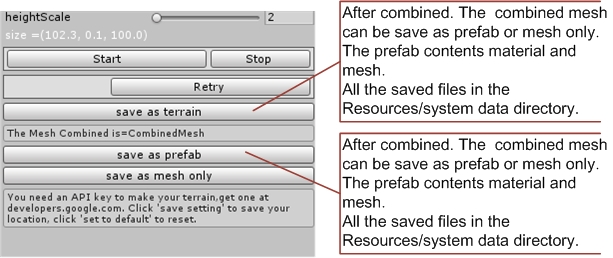
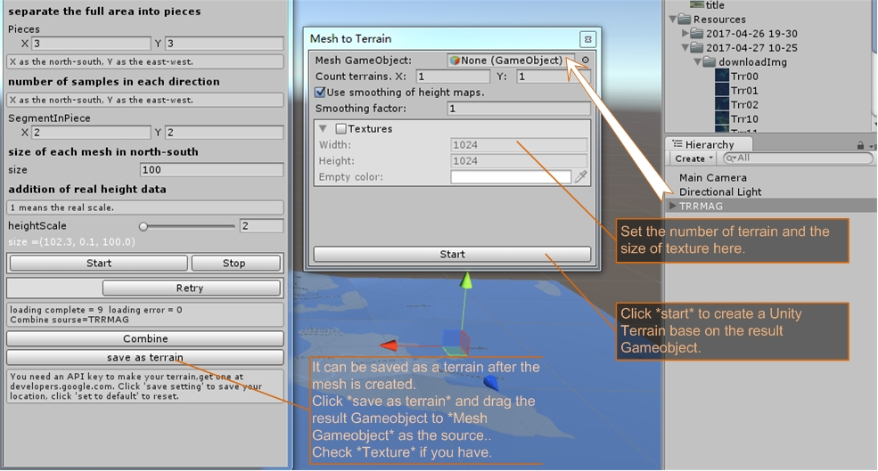
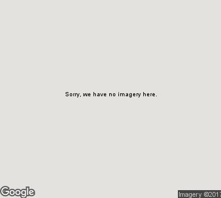
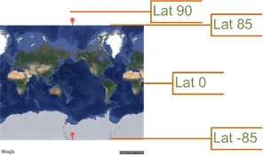
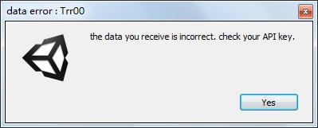

Real terrain maker is an easy tool for creating terrain with the real geographic data.
Specifies the geographic coordinates, and make a terrain of anywhere on the earth in a few clicks.
This plug in runs depend on the Google map service, which requires Google's Elevations API and Staticmap API.
Features:
Picture downloads:
Image saved in a folder for each time the generate starts.
Map Style:
Besides satellite, three more types of terrain texture supported. It is convenient for making a 3D map.
Real Elevation data:
Using the elevation data of Google map, over 30 meters in most of the Earth areas.
Easy setting:
To make a terrain faster or in high quality, simulate the real world or make an extravagant land. All setting can be made in a few clicks.
Save in many types:
The data downloaded can be saved in mesh, terrain and prefab. Material is created automaticity.
Adjustments saving:
Can save keys and other setting for the other time.
Preset template:
Include some common options for fast data preview or high details terrain creating.
To free users, Google does limit the number of elevation samples, and limit the times of
requirements in one day. Try to work within this limitation or upgrade the API key.
Guide
1.Find Real Terrain Maker at your window menu.

2.The editor window will show up. Define the geographic coordinates and other
setting, then start the process.

3.After loading the real world geographic data, a new Gameobject will be created in the scene.

4.save the combined mesh to prefab for the later use.

5.you can alos save the result gameobject to Unity terrain as you like.

notice:
while using the Google map service you might meet some error message.
The debug log and warning in Console Tab shows the status of loading data and
creating meshes. you can ignore them most of the time.
If you cannot download the right texture you want, try your query in your web browser.
example:
https://maps.googleapis.com/maps/api/staticmap?center=location-lat,location-lng&zoom=your-zoom&size=your-sizexyour-size&maptype=your-maptype&key=your-API-key
you can copy the query from the debug log.

If you receive a texture like this, it means Google do not present the imagine at this zoom scale. Try to set the zoom to a smaller value manually.

Google staticmap service does not present a imagine over lat +-85. if you want to create a terrain in this area, try ignore the texture.

The free staticmap API limits the imagine size to 640*640. The number of pieces determines the quality of the texture.Larger value of pieces.x and pieces.y lead to better texture, and slower speed. It’s not uggested to set the pieces larger then 10*10.
The free user API limits the number of elevation samples, and the times of requirements in one day. If you work with a free API, confirm the segmentInPiece.y less than 511 and product of the number of pieces and segmentInPiece.x should less than 2500. If you receive this error, use another API key and click
Retry.

if you get some other problem, try copy the query in debug log to your web browser, and check the responses at
https://developers.google.com/maps/documentation/elevation/intro#ElevationResponses
To gain an API key, login your Google account and enable the API at:
https://developers.google.com/maps/documentation/elevation/start
https://developers.google.com/maps/documentation/static-maps
If you have not created the terrain completely in one time, you may receive some warning when you combine the meshes. You can go on combine them if you are satisfied with the result data.